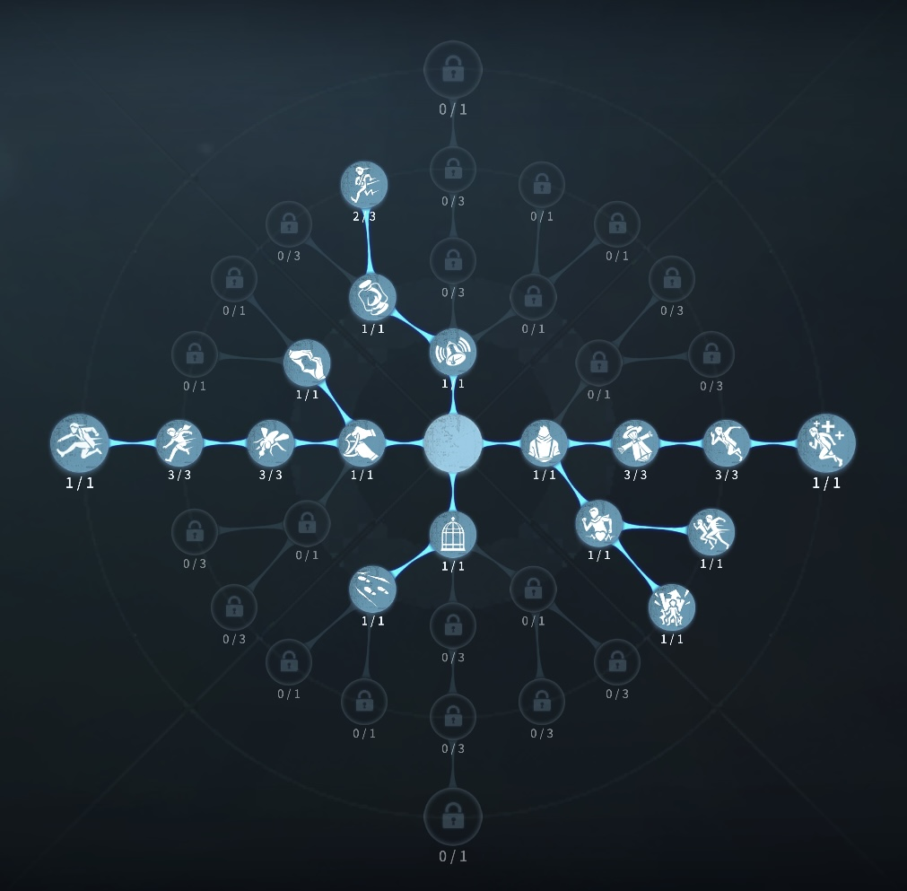
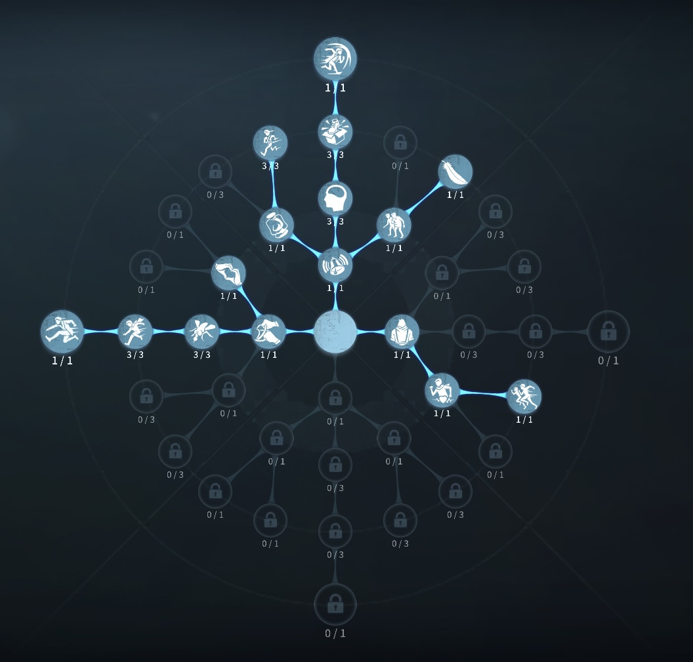

弁護士の評価
ハンターの位置がまるわかり、初心者にはとっておきのサバイバー
外在特質と特徴
特質1:深謀遠慮
・地図を使用してから一定時間、または使用中は最も近くにある3台の未解読の暗号機、脱出ゲート、サバイバーとハンターを強調表示する。・弁護士の地図の使用可能時間はほかのサバイバーより100％上昇する（最大76秒）
特質2:要点記録
・18m移動するごとに移動速度が0.14％上昇。最大3.5％まで・自身が一度も利用していない窓枠・倒れた板を乗り越える度に窓枠・倒れた板を乗り越える速度が1.5%上昇。最大12％まで
・地図を使いながら移動や乗り越えを行うと上昇率が2倍になる。
・解読を5％するごとに解読速度が0.75％上昇。最大15％まで
特質3:無情な心
・恐怖の一撃を食らわない特質4:荘園旧友
・被ダメ後の加速する時間が２秒に延びる特徴
追われても、追われなくても強く出れるサバイバー
最大まで速度が強化された弁護士は追えないほど強い
救助や板窓の乗り越えで恐怖の一撃をとられない
初心者から上級者まで幅広く愛されているサバイバー
基本的な立ち回り方
1. 追われた時
始まったらすぐに地図を開き、チャットを送ります。（ハンターの共有）
そして、追われると分かった時、隠密したり距離チェを意識して
強いポジションをとっておきます。
地図を広げながら、移動、乗り越えをすることで上昇率が2倍になるので移動中は広げることを意識しよう。
おすすめは隠密！
2. 追われない時
始まったらすぐに地図を開き、チャットを送ります。（ハンターの共有）
解読に専念する。
粘着やダブルチェイスなど一切必要ありません。
思う存分解読しよう！
状況にもよりますが、救助もいかないことが多い。
おすすめの内在人格
膝蓋腱反射型人格
この内在人格は、膝蓋腱反射で確実に距離を取り、カタルシス効果を採用することで元から長い負傷後加速にさらにバフをかけた人格

中治りなし型人格
この内在人格は、なんとしてでもチェイスを延ばし、雲隠れで足跡を消し隠密を狙う、ロマン型人格。あまり採用はしない。


みんなのコメント